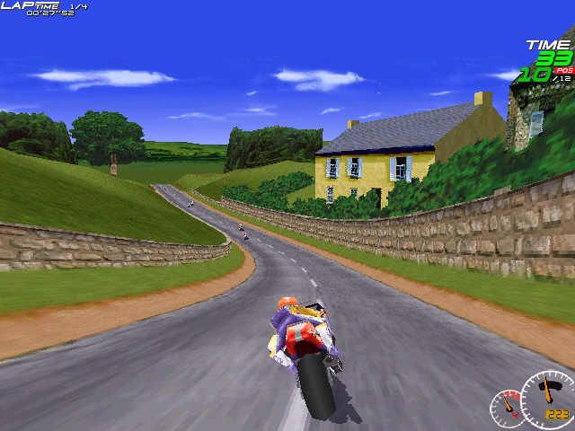
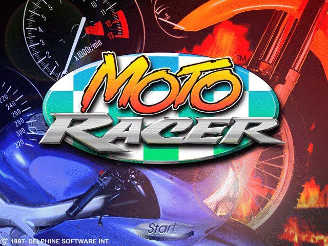
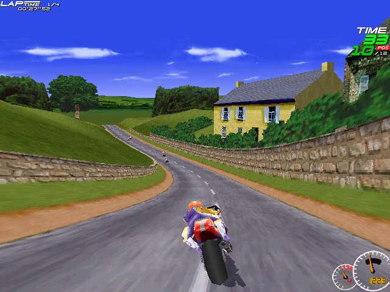
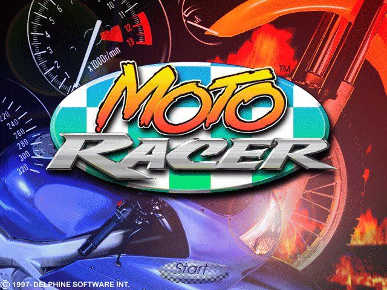

Play date: 1997
Developer: Delphine Software International
Publisher: Electronic Arts
Memo: Woah, what a rocket!
Description: An arcade motorcycle racer in which both superbike and motocross events are available. Game modes include Practice, Time Attack, in which players race against their own replays, Single Races against computer-controlled opponents, and a Championship Circuit. Network or Internet play for up to 8 players is available as well. Winning the championship unlocks additional courses out of the 4 road and 4 dirt tracks available, as well as the new game options Reverse and Pocket Bike. In Reverse mode the tracks are raced in the opposite direction, while in Pocket Bike mode every racer is given a miniature version of his motorcycle. A free track add-on extends the game with one additional course for sportbikes and dirtbikes each.

 
